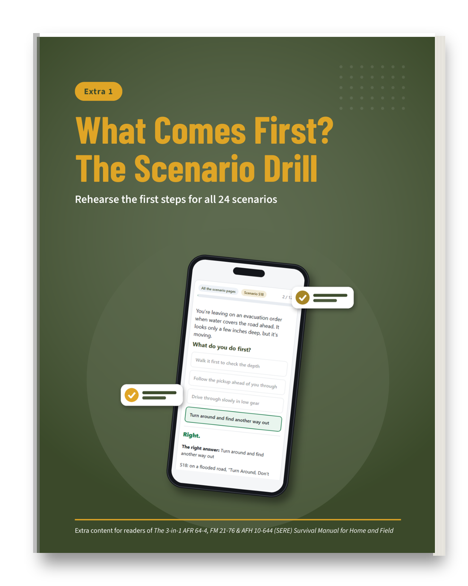
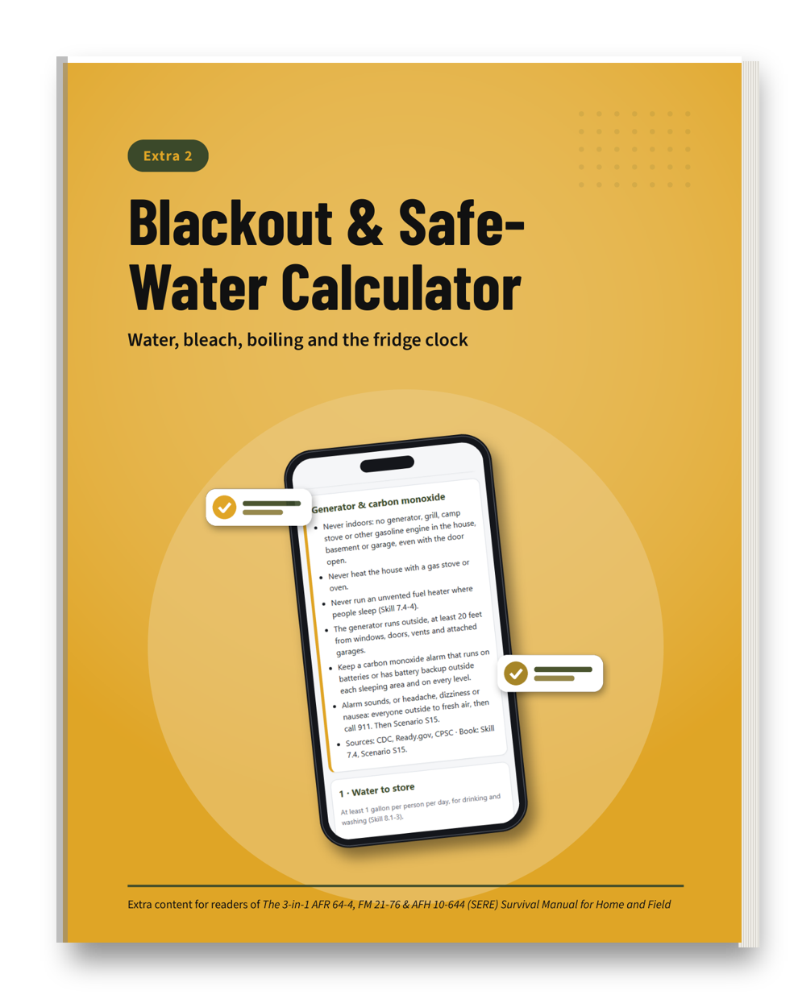
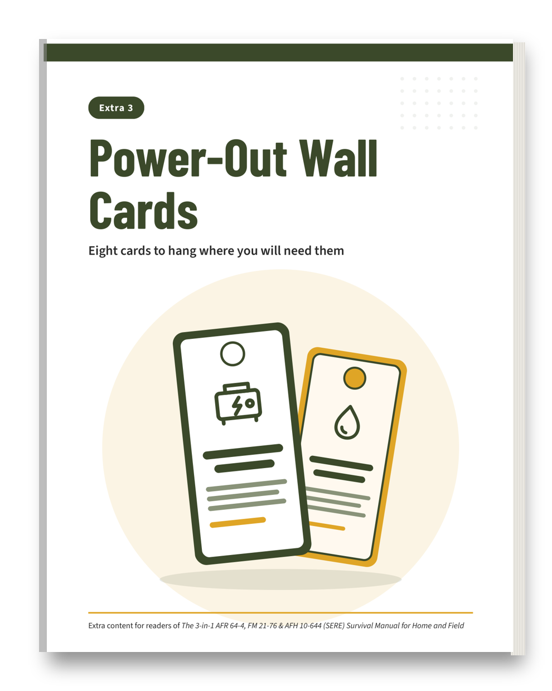

1. What Comes First? The Scenario Drill
Rehearse the first steps for all 24 scenarios, one card at a time, and see exactly what you would have missed.
OpenYour access code is printed at the end of Chapter 10 of the book.

2. The Blackout & Safe-Water Calculator
Do the math for your own house in seconds: how much water to store, how many drops of bleach, how long to boil, and how long the fridge has been off.
Open
3. Power-Out Wall Cards
Eight cards to print and hang where you will need them: on the fridge, by the generator, next to the water.
Download